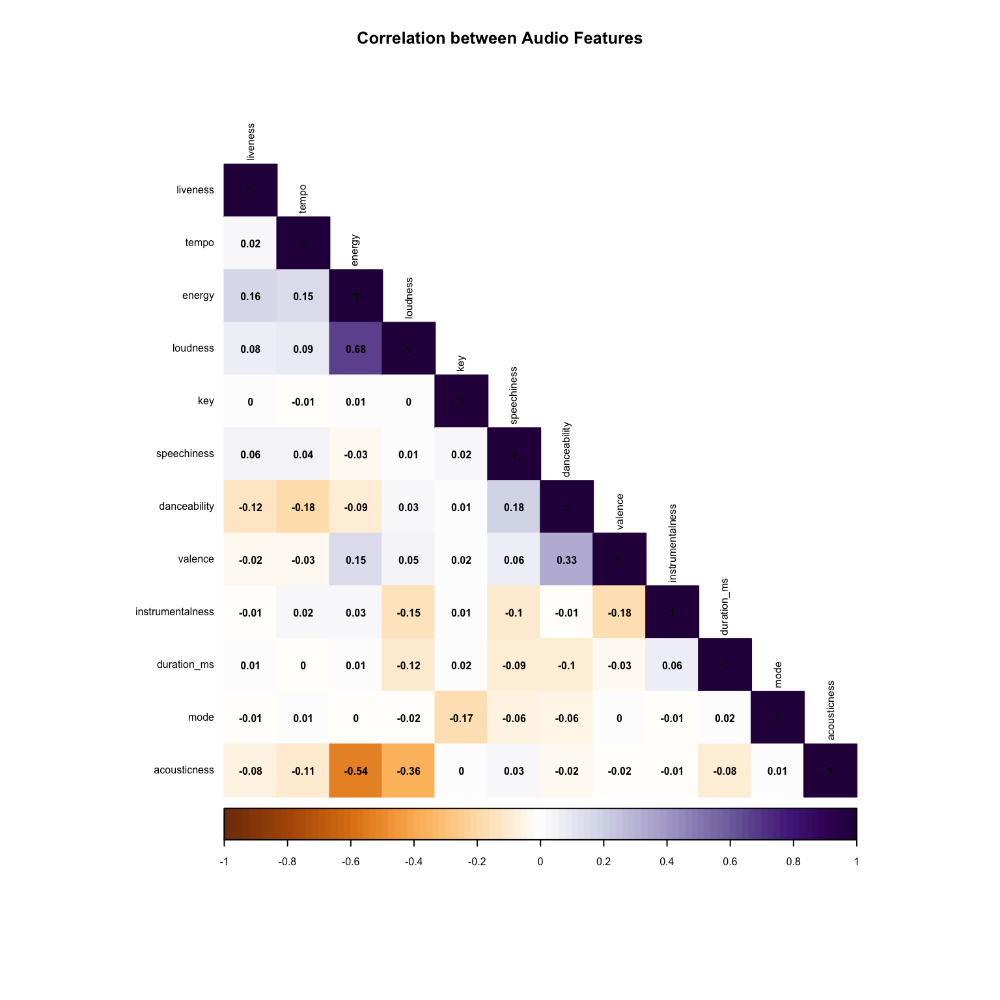
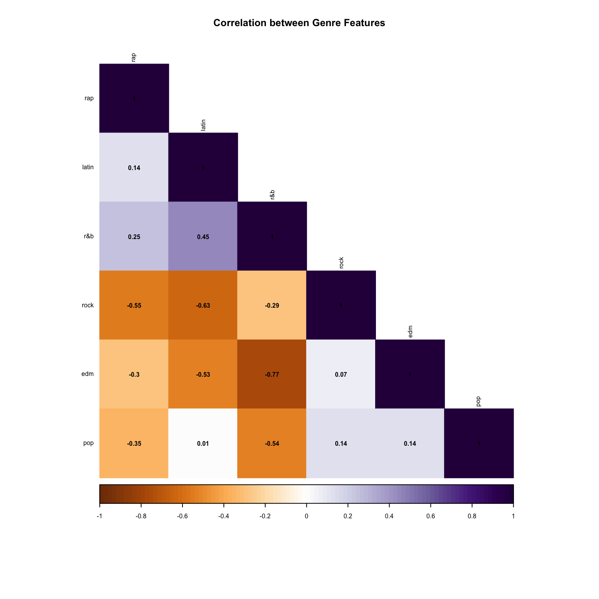

How Does Genre Classification Work? A Study of Spotify Data
“Music expresses that which cannot be put into words and that which cannot remain silent.” - Victor Hugo
Introduction
In delving into the mechanics of genre classification within the realm of music, this study takes a comprehensive look at the inner workings of Spotify’s genre classification system. Extending its scope across six decades, from 1957 to 2020, this musical exploration serves as a time-traveling odyssey, unraveling the intricate threads that define how music genres not only mold themselves but are intricately woven into the fabric of shifting industry dynamics and evolving listener preferences.
The significance of this exploration is heightened amidst the rapidly transforming landscape of the music industry. As indicated by the Recording Industry Association of America (2022), the surge in revenues from streaming music has been remarkable, constituting an astonishing 84% of total music revenues in the initial half of 2021. At the forefront of this revolution stands Spotify, acknowledged as the “world’s largest music streaming provider in terms of global paid-for subscriptions” (Music Business Worldwide, 2023), with projections foreseeing sustained dominance throughout the 2020s (Goldman Sachs, 2023). Simultaneously, the advent of digital music platforms has led to a departure from rigid “hard genre categorisation” to a more adaptable “mood-based categorisation” approach. This strategic shift aims at fostering new music through effective exposure, as highlighted by industry observers (The Guardian, 2017).
Thus, scrutinising the metamorphosis of music genre categorization on Spotify in response to released songs transcends mere academic inquiry. It serves as a focal point through which we can glean insights into the dynamic interplay of change and continuity within the music industry. This understanding not only informs business strategies but also provides valuable perspectives on the perpetually evolving musical landscape, particularly within the context of our increasingly digitised society.
‘Tidying’ Data
First, to isolate the tracks, genres, and audio features for easy processing, I created a new data-set with the relevant variables. I also created a list of genres and the respective quantity of songs for each.
| playlist_genre | n |
|---|---|
| edm | 6043 |
| latin | 5155 |
| pop | 5507 |
| r&b | 5431 |
| rap | 5746 |
| rock | 4951 |
Using ggplot, to get a sensing of the dataset, I then plot the data into graphs to find the overall trends in genre popularity, subgenre dynamics, and the counts of each subgenre within each genre.
Find it in my interactive Shiny app below!
<iframe height=“400” width=“100%” frameborder=“no” src=“https://mjswelise.shinyapps.io/2207dataset_overview/”> </iframe>
Defining Genre
In my quest to determine what makes a ‘genre’, I first condensed the data-sets ‘by year’ from YYYY-MM-DD. Here, I found that there was an insufficient population size of songs from before 1966 (i.e. <30 instances), and chose to filter the data that way to ensure a more accurate output from my dataset.
Density of Audio Features by Genre
Then, I created a histogram to determine the density of audio features by genre. Here, we can observe that, collectively, the songs in the dataset lean towards characteristics such as low acousticness, liveness, instrumentalness, and speechiness, coupled with higher danceability, energy, and loudness.
On a genre-specific level, EDM tends to feature lower acoustic elements, heightened energy, and subdued valence, conveying a sense of melancholy. In contrast, Latin music is characterised by elevated valence, indicating a positive and cheerful mood, along with pronounced danceability. Rap songs stand out for their high speechiness and danceability, while rock compositions favor live recordings and exhibit lower danceability.
Examining song durations by genre reveals that Pop, Latin, and EDM songs tend to be shorter, while R&B, rap, and rock songs are associated with longer durations.
Analysis of the histogram suggests that elements like energy, valence, tempo, and danceability hold significant potential for distinguishing between genres, whereas instrumentalness and key may contribute less prominently to genre classification.
# density of audio features by genre, probably change this to shiny
audio_features <- names(spotify_songs)[c(12:23)]
spotify_songs %>%
select(c('playlist_genre', audio_features)) %>%
pivot_longer(cols = audio_features) %>%
ggplot(aes(x = value)) +
geom_histogram(aes(fill = playlist_genre), color = "black", alpha = 0.5, bins = 10) +
facet_wrap(~name, ncol = 4, scales = 'free') +
labs(title = 'Histogram - Audio Features by Genre', y = 'Density') +
theme(axis.text.y = element_blank())
Correlation between Individual Audio Features
In addition, I found the correlation between individual audio features, as well as of individual genres (in the next section!). I wanted to evaluate any further interdependencies among these musical characteristics, as well as to understand the correlation patterns specific to distinct genres, to shed light on how the musical attributes within each genre are interconnected.
# correlation between audio features
spotify_songs %>%
select(audio_features) %>%
scale() %>%
cor() %>%
corrplot::corrplot(method = 'color',
order = 'hclust',
type = 'lower',
diag = TRUE,
col = COL2('PuOr', 100),
tl.col = 'black',
addCoef.col = "black",
number.cex = 0.5,
title = 'Correlation between Audio Features',
cex.main = 0.8,
mar = c(3,3,3,3),
tl.cex = 0.5,
cl.ratio = 0.2,
cl.cex = 0.5)
Across the audio features, energy and loudness seem especially correlated, with a score of +0.68. As such, perhaps, here, we can establish that loudness is less relevant in a genre classification sense, given that energy is still strongly associated with having distinctions with other audio features (i.e. negatively correlated with acousticness, at -0.54, which can be used as a differentiating factor).
Other noticeable correlations can include danceability and valence, which are positively correlated at +0.33.
Correlation between Individual Genres
# correlation between genres
genre_median <- spotify_songs %>%
group_by(playlist_genre) %>%
summarise_if(is.numeric, median, na.rm = TRUE)
genre_overview <- genre_median %>%
select(audio_features, -mode) %>%
scale() %>%
t() %>%
as.matrix() %>%
cor()
colnames(genre_overview) <- genre_median$playlist_genre
row.names(genre_overview) <- genre_median$playlist_genre
genre_overview %>% corrplot::corrplot(method = 'color',
order = 'hclust',
type = 'lower',
tl.col = 'black',
diag = TRUE,
col = COL2('PuOr', 100),
addCoef.col = "black",
number.cex = 0.5,
title = 'Correlation between Genre Features',
cex.main = 0.8,
mar = c(3,3,3,3),
tl.cex = 0.5,
cl.ratio = 0.2,
cl.cex = 0.5)
Statistically, by genre, R&B and EDM are most different from each other - they are strongly and negatively correlated by -0.77. In terms of similarities, Latin and R&B seem most similar, positively correlated by 0.45.
So, Let’s Try to Classify Genres?
In light of this information, the analysis has provided valuable insights into the characteristics that define each genre. Now, the focus shifts towards creating a quantifiable method for genre categorisation.
To achieve this, I planned to identify the median value of each audio feature for each genre and compare it with the overall median of the entire dataset. The exploration of median values for each genre’s audio features in comparison to the overall dataset median will serve as a quantitative basis for discerning the distinctive attributes that define each genre.
| medians | pop | subtracted_value | |
|---|---|---|---|
| track_popularity | 45 | 52 | -7 |
| danceability | 0.674 | 0.653 | 0.021 |
| energy | 0.721 | 0.724 | -0.003 |
| key | 6 | 5 | 1 |
| speechiness | 0.0636 | 0.0495 | 0.0141 |
| acousticness | 0.0810 | 0.0791 | 0.0019 |
| instrumentalness | 1.53e-05 | 9.86e-06 | 5.44e-06 |
| liveness | 0.127 | 0.123 | 0.004 |
| valence | 0.506 | 0.498 | 0.00800000000000001 |
| tempo | 122.001 | 120.004 | 1.997 |
| medians | r&b | subtracted_value | |
|---|---|---|---|
| track_popularity | 45 | 45 | 0 |
| danceability | 0.674 | 0.689 | -0.0149999999999999 |
| energy | 0.721 | 0.594 | 0.127 |
| key | 6 | 6 | 0 |
| speechiness | 0.0636 | 0.0692 | -0.00559999999999999 |
| acousticness | 0.0810 | 0.1695 | -0.0885 |
| instrumentalness | 1.53e-05 | 4.19e-06 | 1.111e-05 |
| liveness | 0.127 | 0.120 | 0.00700000000000001 |
| valence | 0.506 | 0.533 | -0.027 |
| tempo | 122.0010 | 109.0075 | 12.9935 |
| medians | rap | subtracted_value | |
|---|---|---|---|
| track_popularity | 45 | 48 | -3 |
| danceability | 0.674 | 0.737 | -0.063 |
| energy | 0.721 | 0.665 | 0.0559999999999999 |
| key | 6 | 6 | 0 |
| speechiness | 0.0636 | 0.1740 | -0.1104 |
| acousticness | 0.081 | 0.112 | -0.031 |
| instrumentalness | 1.53e-05 | 0.00e+00 | 1.53e-05 |
| liveness | 0.127 | 0.127 | 0 |
| valence | 0.506 | 0.509 | -0.003 |
| tempo | 122.001 | 120.058 | 1.943 |
| medians | edm | subtracted_value | |
|---|---|---|---|
| track_popularity | 45 | 36 | 9 |
| danceability | 0.674 | 0.658 | 0.016 |
| energy | 0.721 | 0.831 | -0.11 |
| key | 6 | 6 | 0 |
| speechiness | 0.0636 | 0.0602 | 0.00340000000000001 |
| acousticness | 0.0810 | 0.0193 | 0.0617 |
| instrumentalness | 1.53e-05 | 3.95e-03 | -0.0039347 |
| liveness | 0.127 | 0.139 | -0.012 |
| valence | 0.506 | 0.368 | 0.138 |
| tempo | 122.001 | 127.040 | -5.039 |
| medians | rock | subtracted_value | |
|---|---|---|---|
| track_popularity | 45 | 45 | 0 |
| danceability | 0.674 | 0.523 | 0.151 |
| energy | 0.721 | 0.785 | -0.0640000000000001 |
| key | 6 | 5 | 1 |
| speechiness | 0.0636 | 0.0427 | 0.0209 |
| acousticness | 0.0810 | 0.0327 | 0.0483 |
| instrumentalness | 1.53e-05 | 2.10e-04 | -0.0001947 |
| liveness | 0.127 | 0.138 | -0.011 |
| valence | 0.506 | 0.521 | -0.015 |
| tempo | 122.001 | 124.166 | -2.16499999999999 |
| medians | latin | subtracted_value | |
|---|---|---|---|
| track_popularity | 45 | 51 | -6 |
| danceability | 0.674 | 0.729 | -0.0549999999999999 |
| energy | 0.721 | 0.728 | -0.00700000000000001 |
| key | 6 | 6 | 0 |
| speechiness | 0.0636 | 0.0681 | -0.00449999999999999 |
| acousticness | 0.081 | 0.139 | -0.058 |
| instrumentalness | 1.53e-05 | 2.43e-06 | 1.287e-05 |
| liveness | 0.127 | 0.121 | 0.006 |
| valence | 0.506 | 0.624 | -0.118 |
| tempo | 122.001 | 110.452 | 11.549 |
As such, the preliminary defining variables for each genre are:
‘Pop’ - popularity, energy
‘R&B’ - danceability, speechiness, acousticness, valence
‘Rap’ - popularity, danceability, speechiness, acousticness, valence
‘EDM’ - energy, instrumentalness, liveness, tempo
‘Rock’ - energy, instrumentalness, liveness, valence, tempo
‘Latin’ - energy, instrumentalness, liveness, valence, tempo
Test the Predictive Algorithm
In the pursuit of evaluating the effectiveness of my predictive algorithm (i.e. of using audio features to predict genre), the decision was made to employ decision trees as the analytical framework. Decision trees, renowned for their interpretability and efficiency in handling classification tasks, were selected to discern the feasibility of classifying music genres based on the prominence of audio features.
The utilisation of decision trees aligns with the objective of unveiling discernible patterns within the intricate interplay of audio features, providing valuable insights into the distinctive characteristics that define various musical genres. This section undertakes the crucial task of testing the predictive capabilities of the algorithm, shedding light on its potential to accurately classify genres based on the nuanced nuances of audio feature prominence.
Here, the decision tree was structured as such:
Energy Check: If the energy level of the song is greater than 0.721, the function classifies it as “pop.” This suggests that songs with high energy levels are predominantly associated with the pop genre.
Popularity and Danceability Check: If the song’s track popularity exceeds 45, a secondary check is initiated. If the danceability of the song surpasses 0.674, it is categorized as “latin.” Otherwise, it is classified as “pop.” This implies that highly popular songs with elevated danceability are likely to fall into the Latin genre.
Danceability Check: If the danceability of the song is greater than 0.674 (but the popularity condition is not met), it is labeled as “r&b.” This indicates that songs with high danceability but not necessarily high popularity are inclined towards the R&B genre.
Valence Check: If the valence (positivity) of the song exceeds 0.506 (but neither the energy nor danceability conditions are met), the function assigns the genre as “rock.” This suggests that songs with a positive emotional tone are associated with the rock genre.
Default Case: If none of the above conditions are met, the function defaults to classifying the song as “edm.” This serves as a catch-all category for songs that do not meet the specific criteria outlined for the other genres.
Notably, I had initially set the initial default case to classify songs as “pop.” However, recognising the overrepresentation of pop songs within the dataset, the default classification was adjusted to “edm” instead. This modification aims to ensure a more balanced and nuanced approach to genre assignment, considering the diversity of the dataset and avoiding a disproportionate bias toward the pop genre.
classify_genre <- function(song) {
if (song["energy"] > 0.721) {
return("pop")
} else if (song["track_popularity"] > 45) {
if (song["danceability"] > 0.674) {
return("latin")
} else {
return("pop")
}
} else if (song["danceability"] > 0.674) {
return("r&b")
} else if (song["valence"] > 0.506) {
return("rock")
} else {
return("edm")
}
}
spotify_songs$predicted_genre <- apply(spotify_songs, 1, classify_genre)
predictions <- spotify_songs %>%
select(track_name, track_popularity, track_album_release_date,
playlist_genre, predicted_genre, danceability, energy, key,
speechiness, acousticness, instrumentalness, liveness, valence, tempo) %>%
mutate(match = if_else(playlist_genre == predicted_genre, TRUE, FALSE))
accuracy_predictions <- predictions %>%
mutate(match = ifelse(playlist_genre == predicted_genre, TRUE, FALSE)) %>%
count(match) %>%
mutate(accuracy = n/sum(n) * 100)
accuracy_predictions match n accuracy
1 FALSE 26626 81.09524
2 TRUE 6207 18.90476However, as per the accuracy table above, the percentage accuracy of classification remained to be less than 20%.
To test it again, I tried the predictive algorithm on a smaller test set, instead of the whole data-set.
# trying with a test case of 10 random songs from the spotify_songs dataset
set.seed(123)
random_10 <- spotify_songs %>%
sample_n(10)
random_10$predicted_genre <- apply(random_10, 1, classify_genre)
predictions10 <- random_10 %>%
select(track_name, track_popularity, track_album_release_date,
playlist_genre, predicted_genre, danceability, energy, key,
speechiness, acousticness, instrumentalness, liveness, valence, tempo) %>%
mutate(match = if_else(playlist_genre == predicted_genre, TRUE, FALSE)) %>%
arrange(predicted_genre)
accuracy_predictions10 <- predictions10 %>%
mutate(match = ifelse(playlist_genre == predicted_genre, TRUE, FALSE)) %>%
count(match) %>%
mutate(accuracy = n/sum(n) * 100)
accuracy_predictions10 match n accuracy
1 FALSE 8 80
2 TRUE 2 20Nevertheless, the rate of accuracy remained quite low at 20%.
Discussion and Conclusion
In delving into the exploration of genre classification through audio features, the complexity of the task becomes apparent. The decision tree, chosen for its transparency, is a valuable tool, yet its application to genre classification reveals intricate challenges. The research question at the core of this endeavor — How Does Genre Classification Work? — is met with a nuanced response, emphasising the multifaceted nature of music genres and the inherent subjectivity in their definition.
Genre classification encounters complexities stemming from the diverse and evolving nature of musical styles. The decision tree, though structured with careful considerations of energy, popularity, danceability, and valence, grapples with several less quantifiable dynamic and subjective aspects inherent to genre delineation. The challenge lies not only in deciphering the intricate relationships between audio features but also in navigating the fluid boundaries between genres.
Furthermore, the inherent subjectivity in defining genres adds a layer of complexity. Genres are not rigidly defined categories but rather fluid and context-dependent concepts. Individual perceptions, cultural influences, and temporal shifts contribute to the malleability of genre boundaries. Consequently, a single decision tree, while illuminating certain distinctions, may struggle to encapsulate the vast spectrum of musical expression.
The potential interactions among audio features, not fully captured by the decision tree, pose another layer of challenge. Music is a rich tapestry where features intertwine in intricate ways, and their combined effect contributes to the holistic experience of a genre. The decision tree, by nature, compartmentalises these features, potentially overlooking synergies that play a crucial role in genre identification.
Addressing the research question of whether genre classification can be achieved through audio feature classification, the presented decision tree offers valuable insights but falls short of providing a definitive answer. The modest accuracy rates underscore the complexity of the task and hint at the limitations of relying solely on audio features for genre classification.
In conclusion, genre classification proves to be a nuanced and challenging endeavor, influenced by the multifaceted nature of musical expression, the subjectivity inherent in genre definitions, and the intricate interactions among audio features. The decision tree, while illuminating certain aspects, prompts further exploration into more sophisticated methodologies, expanded feature sets, and a deeper integration of domain knowledge.
As the quest for accurate genre classification continues, the intersection of technology, music theory, and human perception remains a fascinating and evolving terrain.
References
Goldman Sachs. (2023). Music In The Air. https://www.goldmansachs.com/intelligence/page/music-streaming-services-are-on-the-cusp-of-major-structural-change.html
Music Business Worldwide. (2023). WHY GOLDMAN SACHS BELIEVES THAT SPOTIFY WILL REMAIN THE WORLD’S DOMINANT MUSIC STREAMING SERVICE IN 2030. https://www.musicbusinessworldwide.com/why-goldman-sachs-believes-that-spotify-will-remain-the-worlds-dominant-music-streaming-service-in-2030/
Recording Industry Association of America. (2022). Mid-Year 2021 RIAA Revenue Statistics. https://www.riaa.com/wp-content/uploads/2021/09/Mid-Year-2021-RIAA-Music-Revenue-Report.pdf
The Guardian. (2017). ‘They could destroy the album’: how Spotify’s playlists have changed music for ever. https://www.theguardian.com/music/2017/aug/17/they-could-destroy-the-album-how-spotify-playlists-have-changed-music-for-ever